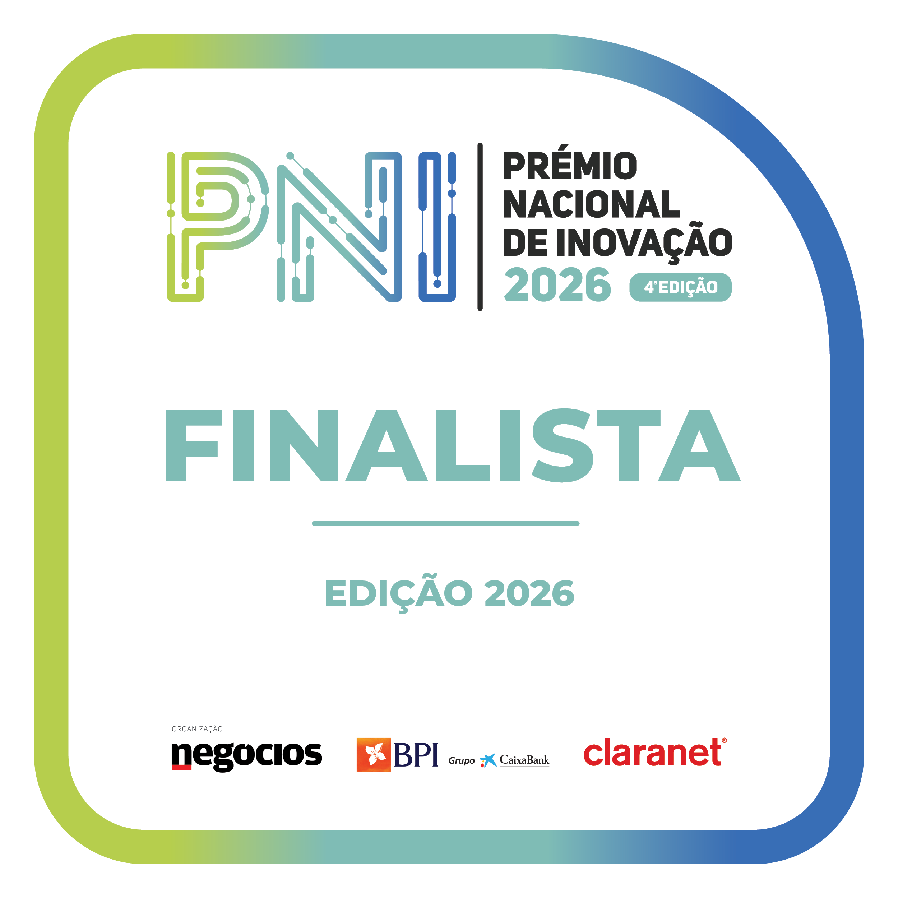

01
Observação
3 registos
Factos observados com método e limitação declarados.
As organizações sabem o que fizeram. Raramente conseguem explicar, anos depois, porque o fizeram. O SRIS preserva observações, evidências, alternativas, pressupostos e restrições para que cada decisão permaneça verificável ao longo do tempo.
Aceda ao SRIS para acompanhar a missão M-001, as observações, os pressupostos, as alternativas e a decisão ainda em aberto.
A plataforma Mission Intelligence reconstrói o contexto de uma missão através de observações, evidências, pressupostos, alternativas, decisões e aprendizagem verificável ao longo do tempo.
Missão real documentada até ao ponto em que efetivamente se encontra.
O projeto reúne distinções atribuídas por diferentes entidades nacionais, evidenciando a relevância da sua proposta nas áreas da sustentabilidade, inovação tecnológica e transformação do turismo.
Selecionado para a short list da edição de 2026.

Finalista da 4.ª edição do Prémio Nacional de Inovação.
Nomeado na categoria TECH pela inovação e desenvolvimento tecnológico aplicado ao turismo.
Cada missão preserva contexto, atores, decisões, evidência, pressupostos, mudanças e aprendizagem.
Estado, tendência e confiança de decisão.
Registe a situação, a decisão em causa, a evidência disponível e aquilo que ainda não é conhecido.
Evidência, decisões, hipóteses, princípios e aprendizagens preservadas em contexto.
Nenhuma recomendação deve ocultar a diferença entre evidência, pressuposto, inferência e incerteza.
Uma arquitetura robusta não produz confiança externa se o valor não for percetível nos primeiros minutos de utilização.
A hipótese exige validação empírica e delimitação dos constructos que podem ser legitimamente observados.
Priorizar UX, clareza narrativa, demonstração institucional e prontidão de apresentação.
Aplicação FastAPI, PostgreSQL, migrações Alembic, healthcheck, autenticação e frontend servido na raiz.
A definição de constructos, limites interpretativos e níveis de confiança permanece como questão científica central.
O SRIS mantém rastreabilidade entre afirmações, fontes, decisões e grau de confiança.
Esta área será ligada ao repositório, aos documentos, aos indicadores e às fontes externas.
Comparar expectativas, resultados e alterações de contexto transforma execução em memória institucional.
Esta área reunirá resultados observados, desvios, pressupostos refutados e conhecimento reutilizável.